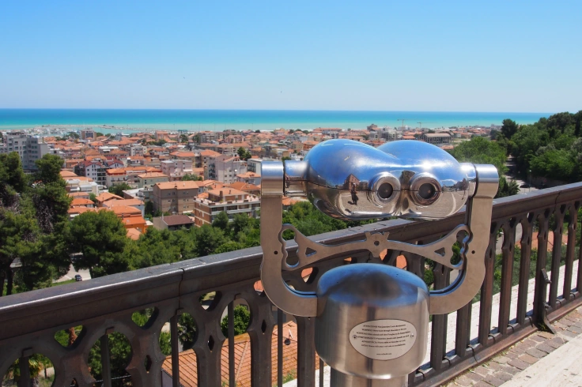

The Belvedere
Giulianova's Belvedere is one of the most scenic spots in the city's historic center. Located in Liberty Square, this belvedere offers a splendid scenic view of the surrounding area. From here, visitors can enjoy dazzling views of the Adriatic Sea and the bustling fishing port below. The Belvedere offers a unique perspective on the city's mix of history, nature and local life.
Surrounding the Belvedere are numerous restaurants and bars, many of which offer outdoor seating with views of the sea and harbor. It is the ideal place to enjoy a meal or a drink while admiring the breathtaking view.
For those visiting the city, the Belvedere is a must-see attraction. Whether admiring the view or taking photographs, the Belvedere offers an unforgettable experience and is the perfect place to stop and admire the scenery before exploring the rest of this fascinating seaside town.